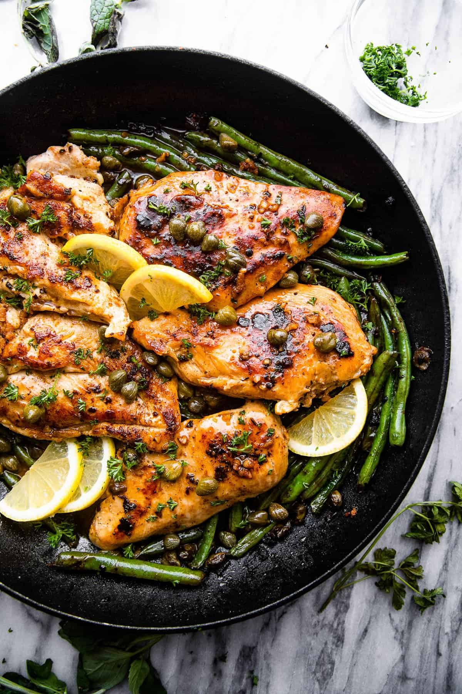

Quick Chicken Piccata

Description
A quick recipe for chicken piccata that is also easy. The recipe takes 10 minutes of
preparation and 15 minutes to cook.
This recipe is for 4 servings. This dish centers
around chicken breats and a simple pan sauce.
Ingredients
- 4 skinless, boneless chicken breast halves
- Cayenne pepper
- Salt
- Ground black pepper
- All-purpose flour
- 2 tablespoons olive oil
- 1 tablespoon drained capers
- 1/2 cup white wine
- 1/4 cup fresh lemon juice
- 1/4 cup water
- 3 tablespoons cold unsalted butter (1/4 inch slices)
- 2 tablespoons chopped fresh Italian parsley
Steps
- Place chicken breasts between 2 sheets of heavy plastic on a solid,
level surface. Firmly pound chicken breasts with the smooth side of a
meat mallet to a 1/2 inch thickness.
- Season both sides of chicken breasts with cayenne, salt and black pepper.
- Dredge lightly in flour and shake off any excess.
- Heat olive oil in a skillet over medium-high heat. Place chicken in the pan,
reduce heat to medium and cook until browned and cooked through, about 5 minutes
per side; remove to a plate.
- Cook capers in reserved oil, smashing them lightly to release brine, for about
30 seconds.
- Pour white wine into the skillet and bring to a boil while scraping the browned
bits of food off the bottom of the pan with a wooden spoon. Cook until reduced by
half, about 2 minutes.
- Stir lemon juice, water, and butter into the reduced wine mixture.
- Cook and stir continuously to form a thick sauce, for about 2 minutes.
Reduce heat to low and stir parsley through the sauce.
- Return chicken breasts to pan and cook until heated through, about 1 to 2
minutes. Serve with sauce spooned over the top.
Links